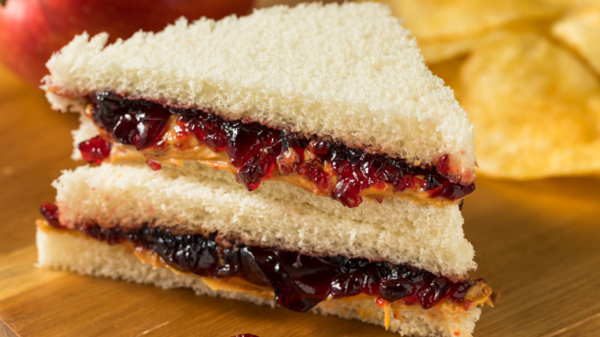

PB&J sandwich

Description
The PBJ is a staple recipe for anyone who's bulking. Its simplicity - just three ingredients and two minutes of prep time - is what makes it such a widely-loved classic.
Ingredients
- Peanut butter
- Jelly
- 2 slices of bread
Steps
- spread peanut butter on one slice of bread
- spread jelly on the other slice of bread
- put them together!
- Optional: toast the sandwich in a toaster oven
Back to home page